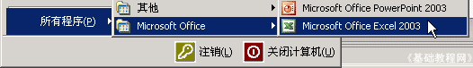

Excel 基础入门教程
编辑修改 返回
表格输入中，有时候需要进行修改，或改正一些错误，下面我们来看一个练习；
1、启动Excel
1）点击“开始－所有程序－Microsoft－Microsoft Office Excel 2003”；

2）出现一个满是格子的空白窗口，这就是一张电子表格了，第一个格子看着边框要粗一些，处于选中状态；
2、编辑修改
1）点菜单“文件－打开”命令，打开上次的“成绩表”文件；
2）先修改姓名里的，选中“刘晓文”，瞄准双击鼠标，这时候文字中间出来一条竖线插入点，表示处于文字编辑状态；
把插入点竖线移到“晓”的前面，按一下键盘上的Delete键，删除这个字，然后重新输入一个“小”，按一下回车键；
3）选中“蒋心编”的单元格，这时表格上边的编辑栏中也有一个“蒋心编”，把鼠标移上去，在“蒋”的后面单击一下，
出现插入点竖线后，按一下退格键，删除它，再输入“江”，然后点一下左边绿色的“勾”确定；
4）再点一下右下角的单元格的“85”，按一下Delete删除键，然后输入“100”，也可以直接输入100替换；
保存一下文件；
本节学习了Excel中单元格的编辑和修改，如果你成功地完成了练习，请继续学习下一课内容；
本教程由86团学校TeliuTe制作|著作权所有
基础教程网：http://teliute.org/
美丽的校园……
转载和引用本站内容，请保留作者和本站链接。